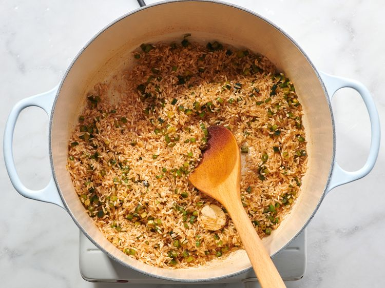
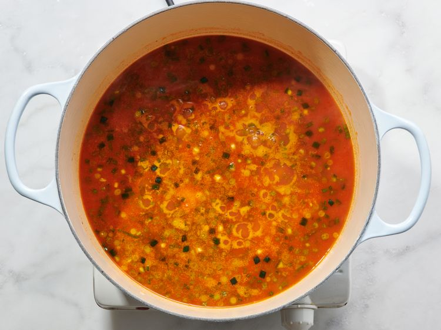
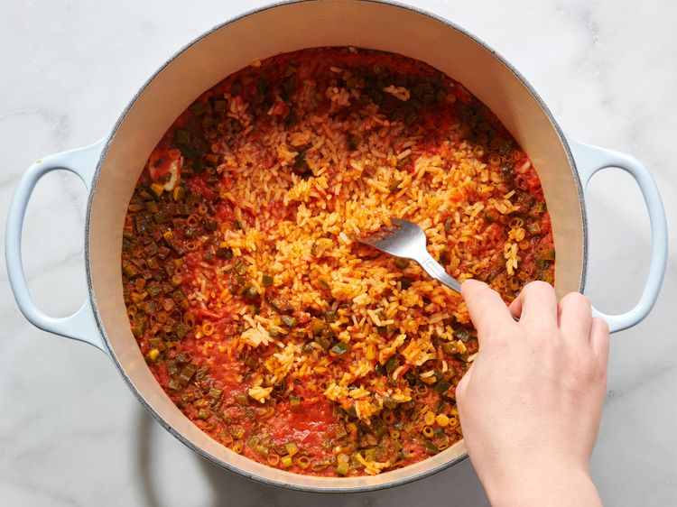

This Spanish rice-inspired spicy rice with tomatoes and fiery jalapeños is super easy to make and always a crowd-pleaser. When was the last time you had a flavorful rice side dish? You can substitute paprika for the chili powder.
Melt butter in a pot over medium-low heat. Stir rice, jalapeño, green onion, and garlic together in the melted butter until rice is completely coated with butter. Add chili powder, cumin, salt, chipotle chile powder, and cayenne pepper; cook and stir until fragrant, about 1 minute.
Stir chicken stock and tomato sauce into rice mixture. Bring to a simmer, cover the pot, reduce heat to low, and simmer for 20 minutes.
Turn heat off and leave pot covered on the burner for 8 minutes. Remove cover and fluff rice with a fork.
Transfer rice to a platter and sprinkle chopped green onion on top.